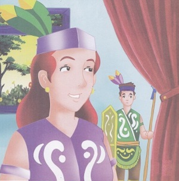
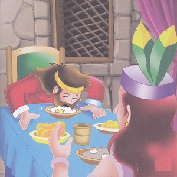
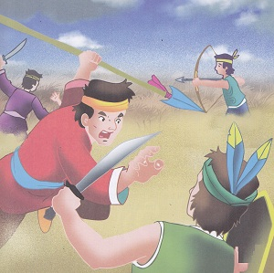
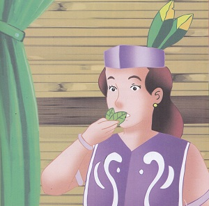
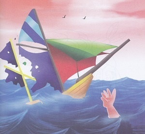

Legenda Danau Lipan
( Cerita Rakyat Kalimantan Timur )
Dahulu, daerah Muara Karam yang terletak di kabupaten Kutai Kertanegara, Kalimantan Timur berupa lautan. Tepi lautnya terletak di Berubus. Pada waktu itu terdapat sebuah kerajaan pelabuhannya disinggahi kapal-kapal dari dalam dan luar negeri. Dikerajaan itu ada seorang putri cantik yang sangat terkenal dari segala penjuru. Putri Aji Berdarah Putih, itulah namanya. Ia adalah gadis yang cantik jelita dan namanya tersohor hingga ke negeri Cina. Mendengar kecantikan Putri Aji Berdarah Putih, Raja Cina membawa pasukannya pergi ke Berubus. Dengan membawa kapal besar mereka hendak melamar sang Putri.
Pada suatu hari, tibalah Raja Cina di kerajaan Putri Aji. Mereka disambut dengan meriah. Putri Aji Berdarah Putih yang sudah mengetahui maksud kedatangan Raja Cina menyambutnya dengan hangat. Tapi, tidak pernah diduga oleh sang putri sebelumnya, kelakuan Raja Cina bagai seekor binatang yang dengan rakus memakan hidangan langsung dari wadah tanpa menggunakan tangan.
Selesai makan dan minum dengan liar Raja Cina melamar putri aji. “Hai putri nan cantik jelita maukah kau jadi permaisuriku ?” kata Raja Cina. Dengan tegas putri Aji menjawab, “Aku tidak sudi menjadi pemaisuri raja yang jorok dan tidak tahu sopan santun.”
Jawaban Putri Aji membuat Raja Cina Murka. Ia kembali ke negerinya. Tapi, kemarahannya tidak sampai disitu. Ia menyiapkan pasukannya untuk menyerang kerajaan Putri Aji. Pertempuran sengit tidak terelakkan. Banyak para prajurit dari kedua belah pihak yang gugur. Melihat banyak prajuritnya yang gugur, Putri Aji menjadi cemas.
Putri Aji mulai mencari cara untuk mengalahkan Raja Cina. Ia pun menggunakan kesaktiannya untuk mengalahkan lawan. Diambilnya sirih dari wadahnya, lalu dikunyahnya sirih tersebut sambil mulutnya sibuk berkomat-kamit mengucapkan mantra. Setelah itu, sepali-sepah sirih itu disemburkan ke segala arah oleh Putri Aji dan berubah menjadi lipan yang ganas. Jumlah lipan itu sangat banyak, bahkan mencapai jutaan.
Lipan-lipan itu membentuk barisan yang siap menyerang para prajurit Raja Cina. Prajurit Aji sangat terbantu dengan adanya lipan-lipan tersebut. Melihat rombongan lipan ganas dan siap menyerang, mereka lari meninggalkan kerajaan. Tapi lipan-lipan itu tidak berhenti begitu saja, mereka mengejar sampai ke laut tempat para prajurit Cina menyelamatkan diri di kapalnya yang besar.
Serbuan lipan membuat kapal mereka tenggelam di laut. Semakin lama tempat tenggelamnya kapal Raja Cina berubah menjadi padang yang sangat luas, ditumbuhi dengan semak dan menyatu dengan laut. Tempat itu kemudian disebut Danau Lipan.